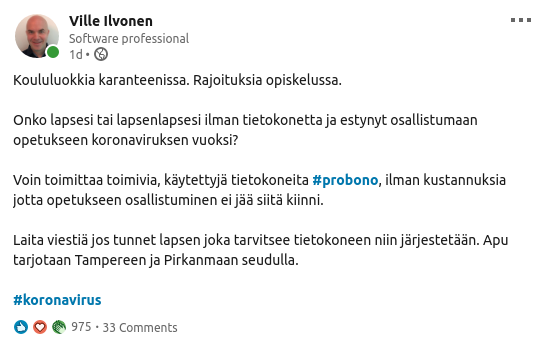

Etäopiskelua koululaisille
Tampereella koululaiset laitettiin etäopiskeluun koronaviruksen myötä.
Kuulin tyttäreltäni että kaikilla ei ole tietokoneita kotona. Ajattelin että siihen löytyy apua omista ammatillisista verkostoista ja osaamisesta.
Tampereen koulutoimen ohjeen pohjalta koulut lupasi lainata omia koneitaan osalle. Pieni määrä koneita löytyi itseltä ja lähipiiriltä. Yhteydenottojen pohjalta yksittäisissä kouluissa oli tarvetta useille kymmenille koneille. Kouluhenkilökunta viesti perheistä joissa ei ole lainkaan tietokonetta.
Luovutettavia tietokoneita ehtii valmistella työn ohessa kotitoimistolla jonne koronavirus ajoi. Valtaosa valmisteluun kuluvasta ajasta on odottelua joka ei vaadi huomiota.
Kiitokset kaikille kannustuksesta ja viesteistä.Toivottavasti koneita löytyy lahjoituksina. Jos voit auttaa, ota yhteyttä.